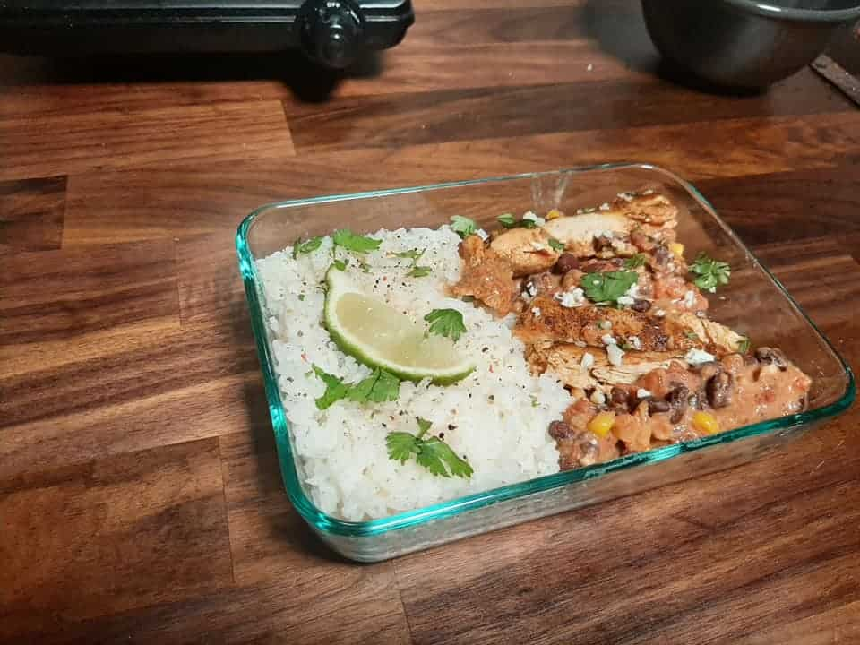

April 2, 2020

This article has been reviewed in accordance with our editorial policy.
People often wonder what it's like living in a tiny house. What are the differences in daily tasks and how does it feel? My goal is to help as many people as possible understand what tiny house living is like and get rid of as much misinformation as possible.
So, what is it like to cook in a tiny house? The only difference between cooking in a tiny house versus a regular house is that you use fewer appliances, have less counter space, and smaller appliances. You can still make lots of great food if you follow these simple tips and recipes.
My husband and I have been living tiny for almost 4 years now! And I have been cooking the whole time. I have cooked in regular homes and in tiny homes, and I prefer it tiny. Let's look at more information about tiny house cooking.
Let's look into some myths and facts about cooking in a tiny house.
Since your kitchen is tiny, you cannot cook a lot, so you have to cook all the time.
Myth 1
People often think that you can't cook very much in a tiny house, so therefore you would have to cook all the time. This is simply just not true. I meal prep every Sunday for my lunches over the next several days, and I have made lots of food in our tiny houses.
It is simple to cook in a smaller place if you just understand how to do it properly. You cannot expect to have 13 knives and 11 different appliances. You need to be able to cook full meals with just a few pots and pans.
I think space is less of a concern than people realize. When we had a big fridge, it was full. When we lived in a normal house, I used the whole counter top. Now that we have a small fridge, it is full. And I use all of the counter space I have now. But I don't feel like I am missing anything. Instead I put more things away when I am done, we eat up leftovers faster. We have no need to have anything bigger, but if it is there we will use it.
As far as time goes, I usually spend Sundays doing a lot of cooking, and then a little time cooking on Friday or Saturday. Just depending on the food I planned for the week. I make dinners regularly, but we also have leftovers, and I use a Crock Pot about once a week for two dinners.
You need a nice kitchen to make good food.
Myth 2
This has always been interesting to me. People tend to think a bigger house will make them happier, more money will make them richer, and a nicer kitchen will make their food better. Frankly, none of these things are true. Like Dom said in the Fast and Furious, "He knows it doesn't matter what's under the hood, the only thing that matters is who's behind the wheel."
The cook is who makes the food good, not the Panini press or the fancy salad bowl. Of course, having helpful tools can always be convenient, but you can still cook great food with only a few things.
So what do you need in a tiny house to cook? Well really you only need the basics to cook food, but having a few extra things comes in handy. What I have had in our tiny houses is a cook top, oven (sometimes), crock pot, microwave, one pan, three pots with lids, hot pads, a spatula, a few knives, cutting board, peeler, can opener, garlic press, measuring cups and spoons.
There are a few different types of cook tops you can get. I recommend gas, but sometimes electric is a good idea too. Most tiny houses use a propane cook top, and I personally feel those are the best. They are very efficient on power, so you have fewer concerns living off-grid as well. But you will have an additional propane bill to consider.
Some tiny homes, who do not care about power usage or do not want to use propane at all, go with an electric cook top. These can work great as well.
When we moved into our first tiny house, our kitchen wasn't complete. We didn't have an oven or cook top. So we went to a sporting goods store and bought a camping propane cook top. We ended up using it for a year and it worked great. We would just buy a small bottle of propane every now and then to refill it.
That cook top was a two burner and I don't think I have ever used more than two burners at a time, even when I had four. Almost all the meals I make only need two pans. Even if I need three, it is usually too much going on at one time and I wait until I am done with one pan to start another.
Microwaves are common in tiny houses, but less so in off-grid homes. We use our microwave a lot, but we have gone without before and that worked too. It is really up to your preference, but microwaves do use a lot of power. If you are off-grid or concerned about your power usage, they are not the best tool.
When buying a microwave, look for very low wattage. Tiny houses are small, so they can only fit so many circuits and breakers into one house. You will not likely be able to turn on your electric cook top, mini-split, AND microwave all at the same time.
Having lower wattage is better, but you need to keep in mind that you should turn some things off when you turn others on. This is especially true for off-grid systems!
Ovens are optional, although a lot of tiny homes still have them. This will completely depend on your lifestyle. Having one can be nice, but if you rarely use it then that place may be better suited for storage.
There are multiple types of ovens you can get, again think about your power usage. We bought an RV oven for our first home, it was small and ran off of propane.

In our current house, which is meant to be for temporary living, we needed something really small. It is only 112 sq ft (34 sq m), so we have to be creative. We ended up buying a one burner electric plug in cook top. So far it has worked well. It takes longer to heat up and uses more electricity than we had planned on. But I have still cooked lots of meals in our tiny house. However, it does take me a little longer because I can't cook two things at the same time.
Here are some handy tips I have picked up by cooking in a tiny house over the years.
As I mentioned, I currently only have a one-burner cook top. So for me, one pot meals are great! But even if you have a little more room, confining your meal to one pan saves space and just makes it easier.
I typically cook a meal and then a side, so I usually need two pans. But it is always nice to only need one!
We do a crock pot meal about once a week. Typically it's thrown together on Monday morning, and then we have dinner for Monday and Tuesday night with minimal work.
Some great ideas are to do a pork or beef pot roast. You can cook a lot of food with minimal effort and have leftovers for a couple of meals.
This is key. Whenever one item is cooking, I am prepping, putting stuff away, or cleaning up. This not only saves space while you are cooking, it saves so much time. If you wait until the end to clean and put everything away it will take forever to cook.
This again is one of the benefits of living tiny. I never did this when I didn't live in a tiny house, and I liked cooking so much less. I felt like it took forever to make dinner and clean up.
Now I love cooking. Now that I live tiny, I am forced to adopt good habits without even noticing it. I have to clean up while cooking, so I have room. This shortens my cooking time and makes it such a better experience. Unknowingly, I have adopted several healthy habits living tiny that make my life so much better and healthier.
Living in a tiny house limits you on space. You don't have room for lots of dishes anyway. However, we choose to have just enough. Recently we only bought two plates, for my husband and me. So now every time we eat we have to wash the dishes. This drastically helps minimize the dishes in your sink at any given time and helps you clean more often.
Since we started using fewer dishes my house stays so much cleaner! Again, this is another healthy habit that I unknowingly adopted. I constantly keep my kitchen clean and put everything away, since there are only a few things it seems like such a simple and easy task.
I know that meal prepping is not for everyone, but I think it is a good idea. I usually make 3-4 days of my lunches on Sunday nights. Then I have less cooking and still have all homemade food. Cooking in bulk is just a time saver. But it also really helps when you have a small kitchen and you don't want to cook twice a day in it.
Feeling like you always have to cook may be a downside for many people. But you can still make bulk food in a tiny house, make some extras for the next day or two and you will feel more comfortable with your kitchen. Of course it is always a good idea to cook most of your meals instead of eating out, so having extra on days you are too tired also helps a lot!

Most tiny houses will have smaller refrigerators, cabinets, and overall storage for food. It may be an adjustment to learn how to go grocery shopping for your tiny house. Having less room for food does not mean you have less food, it only means that you eat what you do have.
There are some simple tips I can give you that I have learned over the years of living tiny. But mostly it comes down to eating the food you have. If you leave cans and packages in your cabinet for a long time and just keep buying more, you will have a hard time living in a tiny house.
I keep a few backup meals in my house of canned or packaged foods, but I do not keep buying more. You can also keep lots of different ingredients to make all types of foods, but you just need to use them up as you buy more.
I tend to buy some things I only use for a couple of meals, for example sour cream, and then I make those few meals over the next couple weeks. And then I won't buy more sour cream for another month or longer. For me it is just easier to go in phases.
You will also need to eat up your meats faster, since you will not likely have as much freezer space. This means you will be eating fresher food too.
The basics are to make sure you eat up the food you have and don't buy too much, so that you can. We go grocery shopping once a week and have plenty of food.
Our typical week of eating:
Breakfast- We sometimes eat eggs and bacon, or something similar
Lunches- My husband doesn't eat a whole lot at work, so some sandwiches maybe. I pack a few meals, for example creamy chicken salsa. And then I will take some boiled eggs or a salad on Friday for lunch.
Dinners- Monday- Crock Pot Meal. Tuesday- Crock Pot leftovers. Wednesday- We buy tacos. Thursday and Friday- Usually throw together some food one day and cook a dinner the next. Saturday and Sunday- This is right after grocery shopping, so we will eat something we just bought, like steak and potatoes.
Our typical grocery list:
Based off of all of that food, I will usually buy something like the following
I know this can be difficult and time consuming for those who don't do this, but in the end it will save you time and headache. Just write down 4-5 dinner and lunch ideas throughout the week and the ingredients you are missing.
Then when you go shopping you have a good idea of the foods you will need to buy for that week. Also, buy some extra food that you know you or your family will eat, then you have food on the days you didn't plan for.
What this looks like for us:
I usually plan a crock pot meal for dinner on Monday and Tuesday, so I will buy a pork roast and some potatoes. Then I know we will have tacos on Wednesday night, I'll plan a meal with chicken and rice, steaks and mashed potatoes. And then decide on some lunches for me.
Around that I will buy food I know we eat a lot, like eggs and bacon, snacks, and sandwich materials.
If you have a very small fridge like we do, then this will help a lot. You can keep water bottles, beer, energy drinks, and more in your cupboards. Then just place a few a day in the fridge, this will drastically save on space if your family likes to have a lot of drinks.
We have been doing this for years and I love it. I put in whatever we will need the day before, and then we have all the drinks we want without drinking them too fast or taking up too much room. This is a great way to buy bulk in things like energy drinks, which are much cheaper that way.
Once every couple weeks, I look around at what I have (this is really fast and easy in a tiny house!) and I plan a couple meals to use up those items. If I have just a little bit of soy sauce left, I will plan a meal with that.
This is an easy way to minimize your cooking items without wasting or feeling like you don't have what you need. You can still use up all of your food without having 12 half empty bottles taking up space.
Of course you should keep around the things that you use a lot. I use lots of seasonings, so when one is empty I buy another right away so I am not missing it when I cook something else.
This works best with the other tip of meal planning. When you know what you want to make you can see what you have and what you need. You should not always buy everything so you have it just in case, it is better to stick with what you need for that week. Unless it is something you use frequently.
Here are some great recipes, that are easy to make in a tiny house, and that my family loves!
Ingredients
Cajun Seasoning
Meal
Directions
Ingredients
Sauce
Meal
Directions
Ingredients
Seasoning
Meal
Directions